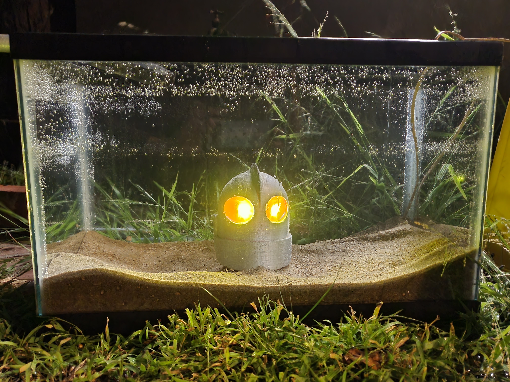
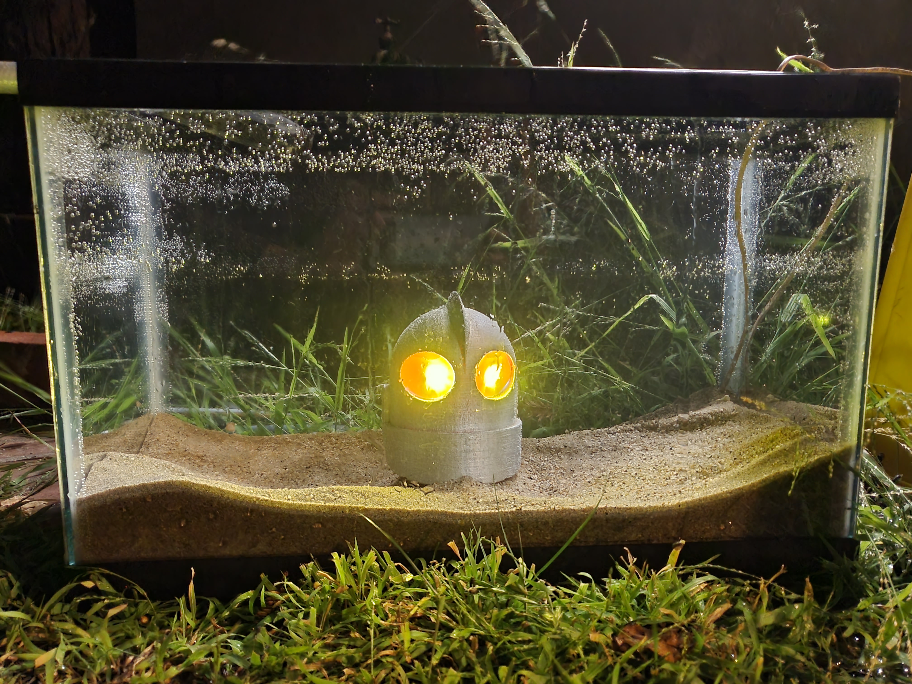

Sunken Hope explores the ending of The Iron Giant where if you haven’t watched the film the robot ends up in pieces after sacrificing himself and his head lands on ice and is trying to reassemble himself. However if that ice wasn’t there due to global warming then his head would fall to the bottom of the ocean where it would get damaged and wouldn’t be able to reassemble himself. I recreated this idea by making a small-scale replica of this gloomy scene using a fish tank filled with sand and sea shells and a 3D printed model of his head with electronics.
ARTIST BIO
Chris Weber is a creative thinker and maker who makes projects mostly in 3D printing and CAD modeling but also in mediums like Photoshop or hand sculpting. He started out making art by sculpting with a clay like plastic to make figures and moved on to using a 3D printer and making/modifying models while using the same painting techniques. He also has used 3D printing to make many props for costumes and utilized electronics to make it pop. There are many mediums he has learned to make his projects such as laser cutting and vacuum forming in order to accomplish his goals and it is this adaptable maker’s mindset that really shows through in his works as well as his creativity in the concepts.


 
